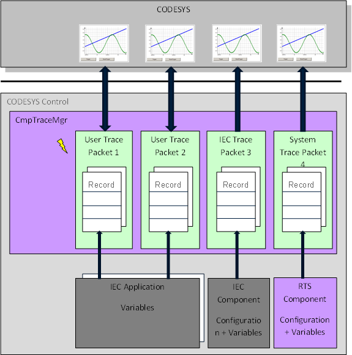

6.3.7.2. Details of the Trace Manager¶
For every trace, the configuration can be created in the following ways:
The user can create a new trace packet and download this packet to the runtime system.
An IEC component (POU or function block out of an IEC application) can create a trace packet (e.g. a fieldbus driver or motion device driver).
A runtime system component can create a trace packet.
Every trace packet is stored and managed in the runtime system (CmpTraceMgr).
To get access to IEC or system-created trace packets, you can get a list of all stored trace packets in CODESYS. For this, you have to add a trace object (”Device Trace”) right under the device object (not under an application!). Then, with the menu command Trace - Upload Trace you get a list of all trace packets registered in the runtime system.
After a trace packet is created, events of the trace manager component are triggered with every user operation (‘Start’, ‘Stop’, ‘Upload’, ‘Destroy’, etc.) on the Trace Packet.
To read a trace, connect the trace in online mode. After that, all data values are cyclically transferred and displayed in the trace editor.
Block diagram, CODESYS and Trace Manager:
The context respectively the task, in which the values are captured cyclically inside a Trace Packet, can be configured. It can be…
an IEC task
any system task of the runtime system. This must be specified by the OEM in the device description of the target. See the setting “trace\systemtasks“ in the target settings documentation!